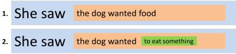
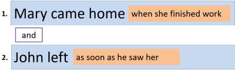
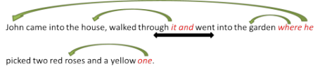

Unit 9: sentences – clauses and phrases

Elsewhere in this course, reference has occasionally been made to sentences, clauses and phrases. Now it is time to take a closer look at what these terms mean.
Briefly, here are some working definitions starting from the bottom up:
- phrase
- A phrase is a group of words performing a single grammatical
function.
For example, in
Water damages paper
we have three words performing three functions, as you know, like this:- water: the noun acting as the subject
- damages: the verb
- paper: a noun acting as the object
The woman over there has been to see the new film on at the Odeon
and here we have three phrases doing the same things:- The woman over there: the noun phrase acting as the subject
- has been to see: the verb phrase
- the new film on at the Odeon: a noun phrase acting as the object
- clause
- Clauses are groups of words which contain verbs.
For example, all these are clauses and they, too, can perform some important grammatical roles.
I wanted to see the film
She arrived
Go!
because he was lonely
He came home
He made himself dinner
Slowly opening the door
He crept in
etc.
These examples are of three different kinds and that will be explained shortly. - sentence
- Just as phrases can consist of more than one word and
clauses usually do, sentences can consist of one clause or more
than one (sometimes many more).
Section C of Unit 4 was concerned with conjunctions and there it was explained that there is a difference between coordination and subordination.
There are four types of sentences:- simple sentences contain a single clause, such as:
John packed his suitcase - compound sentences contain two (or more) coordinated
clauses which can potentially stand alone such as:
She took the money from the bank, went back to the shop and bought the coat - complex sentences contain a main clause and a subordinate
clause as in
I told her the truth because she asked - compound-complex sentences contain a combination of
coordination and subordination as in:
He came home and fed the cat because he had forgotten in the morning before he sat down to watch the TV
To check, try this test. - simple sentences contain a single clause, such as:
The rest of this unit considers phrases, clauses and how they are linked to make a text hang together along with an analysis of a particular sentence type.
Here's the menu and, as usual, clicking on the yellow arrow at the end of any section will return you to it.
| Section | Looking at: |
| A | Phrases The five main sorts of these. |
| B | Clauses Finite and non-finite. Parsing a sentence. |
| C | Cohesion and coherence How texts hang together. |
| D | Conditionals A particular type of complex sentence with special characteristics. |
Section A: phrases
 |
Different types of phrases |
In the section on word class, you encountered the main functions
of lexemes. Phrases perform very similar functions so will be
easy to identify.
In what follows, you need to understand that the term phrase
can be used for a single lexeme or a combination of lexemes.
The lexeme table is a noun but it is also a noun phrase.
In what follows, use your knowledge of the functions of lexemes to
decide what the parts in green
bold are doing in these sentences. When you
have made up your mind, click on the
 to reveal some comments.
to reveal some comments.
|
The young woman
bought the car |
The young woman
is a noun phrase.
It is possible to replace it with a single noun such as Mary. It is functioning as a single noun and the subject of the verb bought. |
| She
almost certainly
paid too much |
almost certainly
is an adverb phrase.
It is possible to replace it with a single adverb such as quickly. It is functioning to tell us the speaker's attitude to the verb paid. |
| She
should have paid
less |
should have paid is a verb phrase.
It is possible to replace it with a single verb such as paid. It is functioning to tell us two things: a) the speaker's attitude to the verb (using should) b) the time in which the verb is understood (past, in this case). |
| She took the
money from the bank |
from the bank
is a prepositional phrase.
The preposition is from and the bank is called the prepositional complement or object. It is functioning to link the verb with the place and explain where she took the money from. |
| She decided it
was a beautiful and
affordable car |
beautiful and
affordable is an adjective
phrase with a double head.
It is possible to replace it with a single adjective such as nice. It is functioning to modify the noun car. |
| She drove
her brand-new red motor
car very carefully |
her brand-new red
motor car is another noun phrase.
It is possible to replace it with a single noun or a pronoun such as it. It is functioning as a single noun and the object of the verb drove. |
Embedding |
Phrases can be embedded within phrases, like this:
- the young woman
- This is analysed above as a noun phrase (and it is) although it contains an adjective phrase (young). In the same way, the noun phrase her brand-new red motor car contains an embedded adjective phrase.
- should definitely have paid less
- This is called a verb phrase (and it is) but it contains two embedded adverb phrases: definitely and less. Remember that phrases in this analysis can be single words. A verb phrase strictly seen contains only verb forms so the verb phrase is should have paid and the adverbials, definitely and less modify the verb phrase. For teaching purposes, because verb phrases often contain embedded adverbials, it makes sense to treat them as single units.
- from the bank
- This is a prepositional phrase and has a noun phrase (the bank) embedded in it acting as its complement.
Embedding is common. We frequently embed adjective phrases inside noun phrases and adverb phrases inside verb phrases and noun phrases are almost always seen when a preposition is used at all, helping to make up the prepositional phrase.
Heads, pre-heads and post-heads of phrases |
One key idea to understand about phrases is the Head because this is
the central concept of the phrase.
For example:
- The young woman in red
- The noun woman is the Head of this phrase. There is a pre-head (the young) and a post-head (in red). We say that the noun is pre-modified, with a determiner and an adjective, and post-modified, with a prepositional phrase.
- certainly bought hurriedly
- The verb bought is the Head of this verb phrase, in fact, the phrase only consists of the single word. It is pre-modified by an adverb phrase (certainly) and post-modified by another one (hurriedly).
- the red car with the yellow roof
- The noun car is the Head of this phrase. The pre-head modifier is a determiner plus an adjective, the red. The post-head modifier is a prepositional phrase, with the yellow roof.
- the more expensive car
- Here, we have chosen an adjective phrase of which, obviously, the adjective expensive is its Head. It is pre-modified by the adverb more to make it a comparative form.
- the car directly in front of the garage
- Here, we have the complex preposition, in front of, which forms the Head of the prepositional phrase. It has a complement (or object to some), the garage and is pre-modified by the adverb directly.
- drove very quickly
- Here, we have an adverb phrase with its Head, quickly and that is pre-modified by another intensifying adverb, very.
Phrases can sometimes become separated but the analysis of what is the Head, what is the pre-head and what is the post-head stays the same. Like this:
The young woman in red certainly bought the red car with the yellow roof hurriedly.
Here, the adverb hurriedly is the post-head modifier of the verb phrase but it has become separated from the verb and sent to the end of the sentence.
Phrases can usually only have one Head but they can have
many pre- and post-head elements. For example, can you analyse
this? Find the Heads of the phrases and then identify the pre-
and post-head modifiers.
Click
 when you have done that.
when you have done that.
The old man, exhausted and unhappy at the end of his journey through the county happily arrived at his hotel eventually.
It looks like this.
Noun phrases in red,
prepositional phrases in black,
verb phrases in green,
adjective phrases in orange,
Heads underlined:
The old
man,
exhausted and
unhappy
at the end of
his journey through the
county happily
arrived
at his hotel
eventually.
- The first noun-phrase Head is man and that is pre-modified with the old and post-modified by the adjective phrase exhausted and unhappy.
- The verb phrase Head is arrived and that is pre-modified by happily and post-modified by the prepositional phrase at his hotel and the adverb phrase eventually. It is also pre-modified by the prepositional phrases at the end of his journey through the county.
- There is a second noun-phrase Head, journey, and that is pre-modified by the determiner his and post-modified by the prepositional phrase through the county.
Constituents of clauses |
When analysing clauses, we need to understand which bit is modifying
what. For example, in the sentence:
She bought the car with the red roof
it is clear that with the red roof post-modifies the Head
car. You can't say
She bought with the red roof
so the prepositional phrase obviously modifies the car.
However, in
She photographed the dog in the garden
it is not so clear:
Was the dog in the garden?
Was she in the
garden?
Were they both in the garden?
We can say
In the garden, she photographed the dog
and
It was the dog in the garden that she
photographed
and the meaning becomes clear.
If in the garden modifies the Head dog it is the dog which was
in the garden and she could have been outside the garden, in
the house or in the road, for example. She could have been in a
low-flying aircraft for all we know.
If in the garden modifies the verb phrase photographed,
on the other hand, we know that the action took place there and that the
dog was also in the garden or the preposition would have been from
(She photographed the dog from the garden).
All this means that we have to be clear what the constituents of the
clauses are. Either it is
Noun phrase as the object of the verb: the dog in the garden
or
Verb phrase (post modified by a prepositional phrase): photographed in the garden
Try this for yourself with:
She spoke to the man from the big house on the corner.
What are the two possible meanings and how does this change the
analysis?
Click
 when you have an answer.
when you have an answer.
If
the verb phrase is the Head
spoke and post-modified by the prepositional
phrases from the big house on the
corner, then she was in the house. That is
where the speaking came from.
If the noun phrase is the Head
man post-modified by the prepositional phrases
from the big house on the corner
then she and he could have been anywhere. The prepositional
phrases tell us where the man lived or came from.
 |
Learn more
phrases |
 |
Take a test |
To make sure you have understood so far, try
a test of your knowledge of phrase
analysis.
Use the 'Back' button to return when you have done that.

Section B: clauses
 |
He waited outside |
Clauses are independent units of meaning. They are, grammatically, phrases which contain at least one verb phrase. Compare, for example the items here. The bits on the right are clauses; those on the left are phrases:
| Phrases | Clauses |
| in the huge garden | he arrived |
| very, very slowly | playing the piano |
| an old dog | to help with the cooking |
| the woman on the corner | she obviously left early |
| the engineer's wife | going slowly under the bridge |
All the chunks on the right here contain a verb of some sort but
none on the left does.
However, if you have spotted that only he arrived and
she left early can stand alone as pieces of intelligible
language, you have noticed something rather important. A
definition of a clause used in many traditional grammars is that it
is a unit containing a subject and its predicate.
- The subject is the thing or person that does whatever the verb suggests.
- The predicate can be many things.
- In the example above, he waited outside, it is the adverb: outside
- It can be a prepositional phrase: he waited outside the pub
- It can be another clause: he waited because he needed to talk
 |
Finite and Non-finite clauses |
In this analysis, we will be using the term clause for any group of words containing a verb phrase but will distinguish between finite and non-finite clauses.
- A finite verb is a form that is
marked in some way for tense. For example, in
They met outside the house
we have the past of meet, in this case but no marking for person in that tense because English doesn't do that. In:
She plays tennis on Thursdays
we have another finite form but this time marked for person.
In English, many verbs which are finite (i.e., carrying tense and person markers) do not have an obvious marker in the morphology. They are still finite forms because having no obvious mark is called a zero marker.
All of these are clauses with finite verbs (i.e., they are finite clauses):- He arrived at 6 (marked for tense with -d on the verb)
- We start at 7 (no marking for tense or person but zero marked and finite)
- We are starting at 8 (marked for tense [current arrangement to talk about the future] and person [plural are])
- A non-finite verb form is not marked for tense or person,
even by zero, and
we do not, by looking at it, know when it happens or who does
it. All these are non-finite clauses:
- opening the letter ...
- ... to see clearly
- having seen it ...
- to speak honestly ...
 |
Matrix and Subordinate clauses |
In geology, a matrix is a fine-grained rock in which other
minerals are embedded and the definition will hold quite well for
our purposes.
Consider these two sentences:
- She saw the dog wanted food
- She saw the dog wanted to eat something
- In sentence 1., we have two clauses:
- The Matrix clause: She saw the dog
wanted food
The Subordinate clause embedded in the matrix: the dog wanted food
Both of these clauses are finite because the verb is marked for tense (and in many languages would also be marked for aspect and person). - In sentence 2., we have three clauses:
- The Matrix clause: She saw the dog
wanted to eat something
Subordinate clause A: the dog wanted to eat something
Subordinate clause B: to eat something
Both the Matrix clause and Subordinate clause A are finite clauses with the verb marked for tense (saw and wanted respectively).
Subordinate clause A is embedded in the Matrix clause.
Subordinate clause B is embedded in Subordinate clause A and is non-finite (the verb, to eat, is unmarked for person or tense).
Subordinate clause A, therefore, is the Matrix clause for Subordinate B.
This means, if you are following, that the terms Matrix and
Subordinate are relative. A subordinate
clause can be the matrix clause for its own subordinate clause.
In many cases (as in these examples) the Matrix clause and the
sentence are the same. That needn't be the case because we can
have, e.g.,
Mary came home when she finished work and John left as soon as
he saw her.
In which we have two Matrix clauses both with an embedded
Subordinate clause (of time) but only one sentence.
If you prefer a graphical representation:

or

There are two important points:
- All matrix clauses must be finite clauses
- Subordinate clauses can be finite or non-finite
Non-finite clauses contain one of the following verb forms:
- the bare infinitive: She let me leave early
- a to-infinitive: I want to leave early
- a past participle form: Left on the table were the remains of dinner
- an -ing form: Leaving early was a real bonus.
Finite verb forms will always be marked for tense (even if as in, e.g., They come late, the marking for tense is the absence of a change to the verb or an ending) and often for person, too, as in e.g., He comes late.
Verbless clauses |
This sounds like a contradiction in terms because we have just
defined a clause as a unit containing a verb phrase. At times,
however, we can leave out the verb because it will be easily
understood. We also, incidentally, often have to leave out the
verb's subject as well.
Here are some examples:
- Leaving out the finite verb phrase
- If possible, come before six (= If it is
possible, come before six)
Whether now or later, we'll get it done (= Whether we do it now or later, we'll get it done)
These clauses often contain conjunctions such as whether, whenever, where etc. - Leaving out a non-finite verb phrase
- Too tired to cook, I went straight to bed (=
Being too tired to cook, I went straight to bed)
There are lots of interesting jobs in the sector, many highly paid (= There are lots of interesting jobs in the sector, many being highly paid)
Verbless clauses are sometimes called defective clauses or even simply small clauses.
 |
Parsing a sentence: tree diagrams |
Parsing a sentence means identifying and isolating the clauses
and phrases (and the words which make them up).
It can then be illustrated with a tree diagram, starting at the top
and breaking down the elements step by step.
To give you an idea about how to do this (and help your learners and yourself), here's an example sentence parsed and then set out as a tree diagram:
The example sentence is:
He bought some fresh apples in the market
and the resulting tree diagram looks like this:

If you would like to try something like that with a similar sentence, try parsing:
The dog stole the food from the table
and then click
 when you have sketched that out on a piece of paper.
when you have sketched that out on a piece of paper.
It should look like this:

|
|
Learn moreThe first example of parsing came
from the essential guide to the sentence and if you would
like to read that and get some more practice in a key
analysis tool,
click here. |
|
|
Take a test |
To make sure you have understood so far, try
a test of your
knowledge of clauses.
Use the 'Back' button to return when you have done that.

Section C: cohesion
John liked the car so he bought it |
Cohesion is the way ideas are linked together to make meaning.
For example, look at the sentence and focus on the words in red and black.
John came into the house, walked through it and went into the garden where he picked two red roses and a yellow one.
The words in red are examples of cohesion in English and they link to the words in black.
- it refers to the house
- and links the two actions
- where links the garden to the action
- he refers to John
- one at the end tells us it's also a rose so we don't need to repeat the noun
Notice, too, that we don't repeat John in walked through it because we know who did that.
We can refer backwards in a text like this:

This is called anaphoric referencing.
It's also possible to refer forwards in a text but that is rarer and gives a different, literary, feel sometimes.

This is called cataphoric referencing.
In all the cases above, we are concerned with what makes sentences hang together. This is called cohesion.
Types of cohesion |
- Reference:
- As we saw in the section on pronouns, this is often achieved using pronouns such as
he in the sentence about
John
above. The pronoun refers either back or forward to the noun in
sentences such as
John didn't tell me where he is
or
When she came in, I saw that Mary was very upset
Sometimes referencing is to a whole statement in examples such as
As I mentioned earlier ...
etc.
Here are some more examples:
A: Where's the car
B: I lent it to Mary
The bus broke down and that's why I'm late
When I finally got round to reading them, I thought the books were really good - Ellipsis:
- This means leaving out (ellipting is the
technical verb) a word because the reader /
listener knows what the reference is. In the example above,
we don't repeat John for the second verb. In spoken
English, we very often get exchanges like
A: What's for lunch?
B: Cauliflower cheese (leaving out the clause, is for lunch)
Here are two more examples:
A: Who arrived?
B: John (ellipting the verb, arrived)
I don't like the red shoes but I love the blue (ellipting the noun, shoes) - Substitution:
- In this, we don't leave out the word but change it for something
more general. For example, above, the use of
one to
mean a rose or in something like
What wines do you want?
I'll take the French stuff - Conjunction:
- We use conjunction to join ideas
(you discovered a lot about conjunction in this course) in both spoken and written English. For
example, and went into the garden, above, or in exchanges like
Why did you open the cage?
Because I wanted to change the water - Lexical cohesion:
- This refers to the fact that in any text (written or spoken) there are likely to appear chains of related words. For example, a text about hospitals it is likely to contain nouns such as medicine, patient, nurse, ward, treatment and doctor with verbs such as treat, admit, operate, sterilise and care for.
- Grammatical cohesion:
- This refers to the fact that we employ similar grammar in texts
to keep the theme, especially the tense, consistent. For
example, the use of simple past tenses in:
He went into the bar, walked up to the counter and ordered three beers
|
|
Learn more:
cohesion |
|
|
Take a test |
To make sure you have understood so far, try
a test of your knowledge
of cohesion.
Use the 'Back' button to return when you have done that.

Section D: conditional (complex) sentences
 |
If you give me a lift, I'll buy you a drink |
Conditional sentences are just one case of clause subordination but, because they cause a good deal of difficulty for learners (and some teachers) we are using them here as an elaborated example of clause patterns.
A conditional sentence is defined on this site as:
A sentence which consists of two clauses at
least, one of which expresses the condition (the protasis) and
contains the conditional conjunction or other marker of condition
and one which expresses the consequence of the fulfilment of the
condition (the apodosis).
(From the
glossary of grammar, lexis and phonology)
For example, in the sentence:
If you come to the party, you'll be able to
meet his sister
there are two clauses:
- The protasis:
If you come to the party
which expresses the condition - The apodosis
you'll be able to meet his sister
which expresses the consequence of coming to the party.
Another way of putting this is to state that conditionals are a special form of sentences with a main and a
subordinate clause. If you would like to review the differences
between subordination and coordination, see
the section on
conjunctions in Unit 4 (new
tab).
Here are a few
examples:
- If you see John, will you ask him?
- I would not bother with it if I were you.
- You wouldn't have had an accident if you had looked where you were going.
- If it rains all night, the road'll be flooded by dawn.
- He would come if you bothered to invite him.
- If it hadn't been for the rain, we would have won the match.
In this list, there are two examples of each of the three basic
types of conditional sentences.
Think about what the sentences mean and what times they refer to and
then divide up the list into three categories.
Then
click
 for some comments.
for some comments.
 |
The traditional analysis |
This is the traditional way the area is handled in coursebooks and student grammars.
| Type of conditional | Sentence | Meaning |
| First conditional | If you see John, will you ask him? | The speaker is not sure if the person will see John but is asking for a clear commitment to ask him if the event happens |
| If it rains all night, the road'll be flooded by dawn | The speaker is sure that the road will flood but only if it rains all night | |
| Second conditional | I would not bother with it if I were you | The speaker is not and can never be 'you' so it's a way of making a hypothetical point and giving advice. This is an example of an 'unreal' or hypothetical conditional. |
| He would come if you bothered to invite him | The speaker is sure that he would come but less sure that he is likely to be invited. This is also hypothetical in that the speaker is reasonably sure that the events will not occur. | |
| Third conditional | You wouldn't have had an accident if you had looked where you were going | The speaker is sure that if the hearer had acted differently the accident was avoidable but knows, of course, that it is speculation about the past and can never happen. |
| If it hadn't been for the rain, we would have won the match | The speaker is sure that the match would have been won but the rain prevented it. Again, this is speculation about the past. |
It is important to understand that conditional sentences like these are in two parts:
- The conditional clause which starts with the word if (or another word such as providing, unless, supposing etc. which has a similar function). The conditional clause cannot stand alone and make any sense so it is a dependent clause.
- The main clause, which can stand alone and represents the outcome.
 |
First conditional |
|
| If you push hard, it will move |
The form of the first conditional is:
| Conditional clause | Main clause | or | Main clause | Conditional clause | ||||
| If | present tense | will | infinitive | will | infinitive | if | present tense | |
| If | you come | you will | see | You will | see | if | you come | |
The form is easy enough and most learners get it quickly.
The concept is slightly more difficult. First conditional forms are
concerned with future events and imply that if one condition is met
(coming, pushing hard) the other event (seeing, moving)
will follow.
Here are some more examples of the form:
If it rains, I'll take an umbrella
If it doesn't snow again, I'll take the dogs out
What will you do if it rains?
 |
Second conditional |
 |
|
If I flew to the moon, I would look back and wave |
The form of the second conditional is:
| Conditional clause | Main clause | or | Main clause | Conditional clause | ||||
| If | past tense | would | infinitive | would | infinitive | if | past tense | |
| If | you came | you would | see | You would | see | if | you came | |
Again, this is not too complicated but there are two possible concepts here.
- Unlikely condition
the speaker does not believe there is a high likelihood of an event occurring but if it does, the follow-on event is certain:
If I won the lottery I'd be happy (but I don't think I'll win it)
If they gave me an extra holiday, I would be really happy (but I don't think they will)
What would you do if you won the lottery? (but I don't think you'll win) - Unreal condition
the speaker does not believe that an event is at all possible logically but is happy to speculate about the outcomes of an unreal event.
If I were you, I'd buy it
If I had a penny for every time I've said that, I'd be a wealthy woman
Both unlikely and unreal conditionals are called hypothetical conditionals in many analyses.
 |
Third conditional |
 |
|
If you had been more careful, it wouldn't have broken |
The form of the third conditional is:
| Conditional clause | Main clause | or | Main clause | Conditional clause | ||||
| If | past perfect tense | would have | past participle | would have | past participle | if | past perfect tense | |
| If | you had come | you would have | seen | You would have | seen | if | you had come | |
Now that is complicated and learners need lots of practice just to get
the form right.
This form refers only to the past and, therefore, applies to clearly
unreal, impossible events. It is used for regrets, criticisms and
speculation and a number of other meanings. Here are some
examples:
- regret
-
If I'd had the money, I would have
bought it
and I regret the fact that I didn't have the money. - criticism
-
If you had driven more carefully, you wouldn't have dented
the car
and I am suggesting that you should have driven more carefully. - speculation
-
If Napoleon had won the battle of Waterloo, what would Europe have been
like?
and I'm asking you to speculate about an impossible past situation.
|
|
Learn moreIf you want to discover more about the conditional forms in English, go
to either: |
|
|
Take a test |
To make sure you have understood so far, try
a test of your knowledge
of conditional sentences.
Use the 'Back' button to return when you have done that.